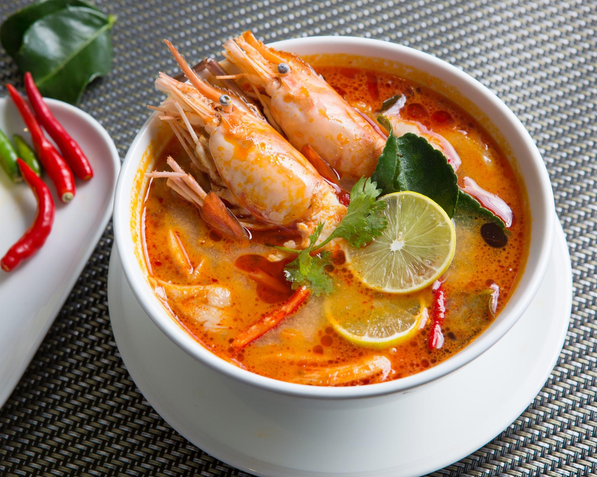
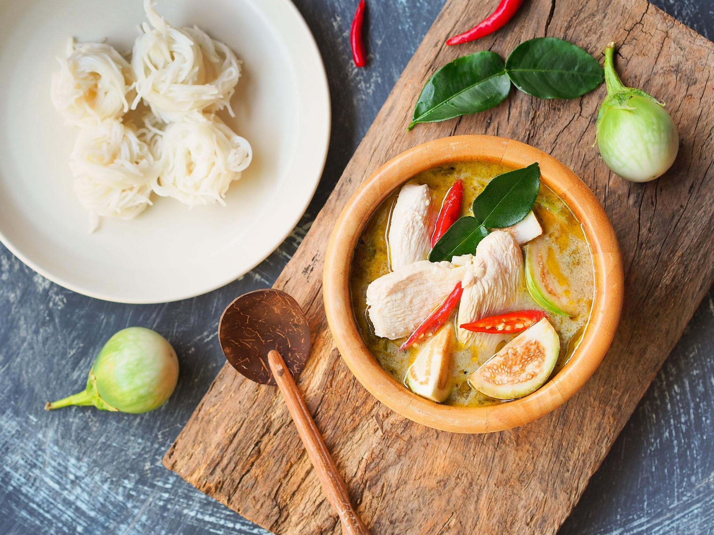
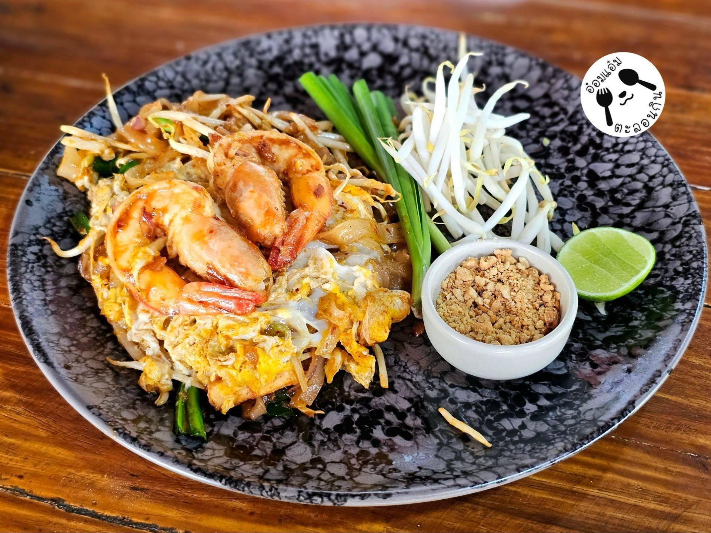
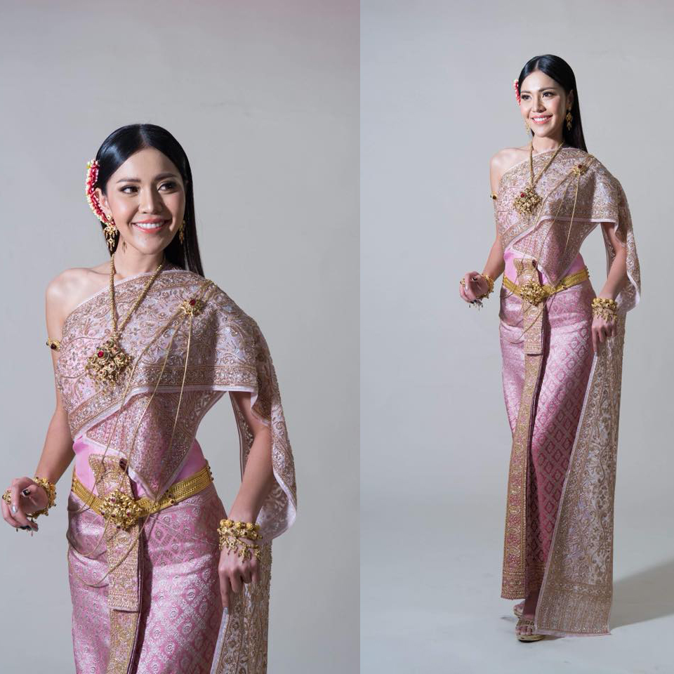
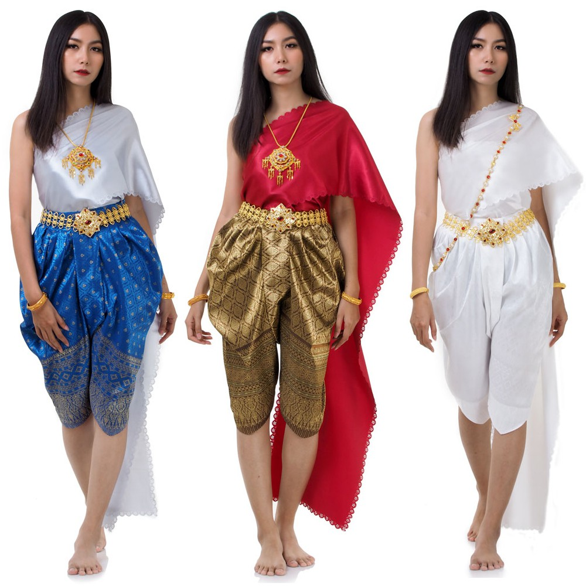
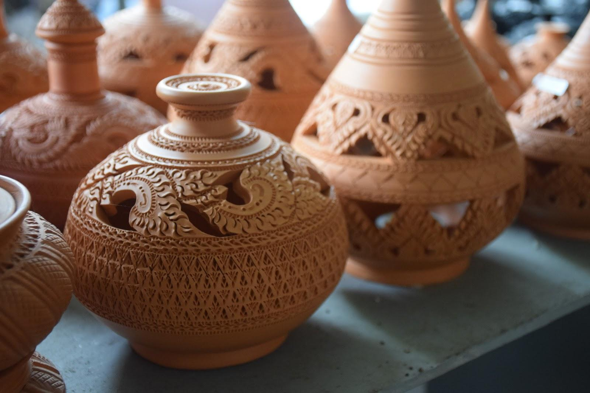
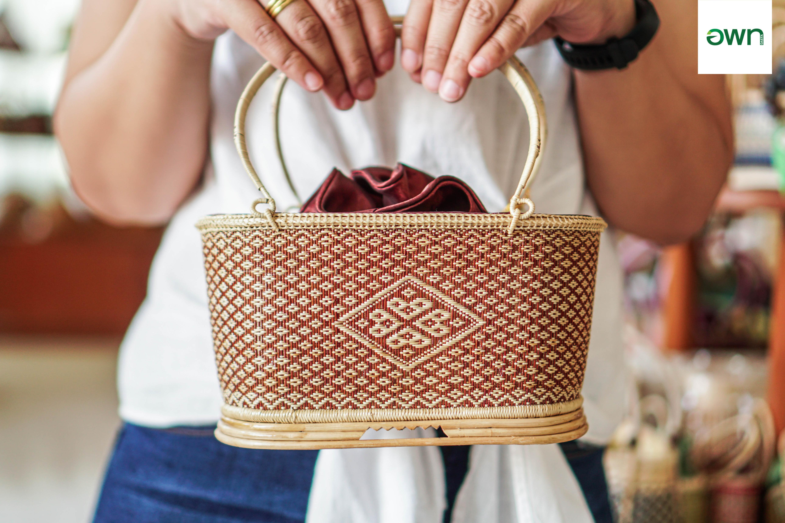

ประเพณีรับบัว(โยนบัว)
ประชาชนโยนดอกบัวลงในเรือแห่หลวงพ่อโต เพื่อแสดงความศรัทธาทางพระพุทธศาสนา
รากฐานแห่งอารยธรรมไทย
ดินแดนแห่งประวัติศาสตร์ ศิลปวัฒนธรรมและวิถีชีวิตที่หลากหลาย
เสน่ห์รสชาติอีสาน

อาหารประเภทต้มที่มีรสเปรี้ยว เผ็ด และกลิ่นหอมสมุนไพร เช่น ตะไคร้ ข่า ใบมะกรูด โดยใช้กุ้งเป็นวัตถุดิบหลัก

แกงกะทิที่มีรสหวานมันและเผ็ดหอมจากพริกแกงเขียวหวาน นิยมใส่เนื้อไก่ มะเขือ และใบโหระพา

อาหารประเภทเส้นผัดที่มีรสเปรี้ยว หวาน และเค็มจากซอสมะขาม ใส่ไข่ เต้าหู้ ถั่วงอก และกุ้ง

ผ้าและวิถีชีวิตเครื่องแต่งกายไทยที่มีความสง่างาม ผู้หญิงนุ่งผ้าซิ่นยกจีบหน้านางและห่มสไบ นิยมสวมใส่ในงานพิธีและโอกาสสำคัญ

ไทยในอดีตการแต่งกายพื้นบ้านที่เรียบง่ายและคล่องตัว ผู้ชายนิยมนุ่งโจงกระเบน ส่วนผู้หญิงอาจสวมเสื้อคอกระเช้าคู่กับโจงกระเบน

งานฝีมือจากชุมชนหัตถกรรมพื้นบ้านของชาวมอญที่นำดินเหนียวมาปั้นเป็นภาชนะและตกแต่งลวดลายฉลุอย่างประณีต สืบทอดฝีมือจากบรรพบุรุษ

อยู่ร่วมกับธรรมชาติภูมิปัญญาการนำไม้ไผ่มาจักตอกและสานเป็นเครื่องใช้ในชีวิตประจำวัน เช่น ตะกร้า กระบุง และกระจาด สะท้อนความคิดสร้างสรรค์ของชุมชน